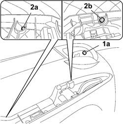
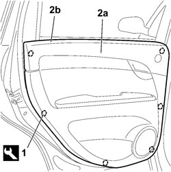
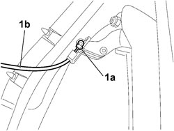

7010E10 REAR SIDE DOOR INNER PANEL - R.R. OR REPLACE
- Path
- Procedures > 70 FITTINGS > 7010 PASSENGER COMPARTMENT REAR SIDE DOORS > 7010E REAR SIDE DOOR TRIM > 7010E10 REAR SIDE DOOR INNER PANEL - R.R. OR REPLACE
- Kind
- repair procedure (removal / refitting; the operation number is the code)
- Applies to
- all engines; all production periods
- Interactive page
- https://sloeber94.github.io/elrnDB-fCrm/en/#/194000920
Applies to: all engines; all production periods
 Removing
Removing
 Refitting
Refitting- Open the rear side door.
- Completely lower the window.
- Turn the ignition key to the OFF position.
- Disconnect the negative battery terminal.
Description | Connector | |
|---|---|---|
BATTERY |
Op. 7040E14 L/H OR R/H SIDE COURTESY LIGHT (ONE) - R+R
Op. 7010M10 REAR SIDE DOOR ELECTRICALLY OPERATED WINDOW SWITCH (ONE), LEFT OR RIGHT - R.R
1. Release the rubber cap (1a) and undo the fixing bolt underneath.
2. Undo the fixing bolts (2a) and (2b).

Applies to: all engines; all production periods
1. Using the special tool, release the panel inner retaining clips.
Tool | Description | Function | Validity |
|---|---|---|---|
1878077000 | Knife | Retainer removal |
2. Remove the panel (2a) after having raised it to release the upper profile (2b) from the door frame.

Applies to: all engines; all production periods
- Disconnect the electrical connection for the tweeter.
Description | Connector | |
|---|---|---|
LEFT REAR TWEETER SPEAKER |
Description | Connector | |
|---|---|---|
RIGHT REAR TWEETER SPEAKER |
1. Using the screwdriver, lift up the securing clip (1a) and release the connecting rod (1b) for the interior handle.

Applies to: all engines; all production periods
Refitting
Removing- Check that the panel is not damaged and check that the retaining clips are intact and correctly positioned.
- Attach the interior handle connecting rod.
- Connect the electrical connection for the tweeter.
Description | Connector | |
|---|---|---|
LEFT REAR TWEETER SPEAKER |
Description | Connector | |
|---|---|---|
RIGHT REAR TWEETER SPEAKER |
- Position the panel correctly on the top part matched with the inner glass scraper and press at the mounting points to fit the retaining clips.
- Tighten the retaining bolts.
Op. 7010M10 REAR SIDE DOOR ELECTRICALLY OPERATED WINDOW SWITCH (ONE), LEFT OR RIGHT - R.R
Op. 7010E14 TOP COVER OF REAR SIDE DOOR INNER PANEL - R R OR REPLACE
- Connect the negative battery terminal.
Description | Connector | |
|---|---|---|
BATTERY |
Topics linked from this page (6)
- 7010E14 TOP COVER OF REAR SIDE DOOR INNER PANEL - R R OR REPLACE
- 7010M10 REAR SIDE DOOR ELECTRICALLY OPERATED WINDOW SWITCH (ONE), LEFT OR RIGHT - R.R
- 7040E14 L/H OR R/H SIDE COURTESY LIGHT (ONE) - R+R
- A001 BATTERY
- P047 LEFT REAR TWEETER SPEAKER
- P048 RIGHT REAR TWEETER SPEAKER
Topics that link to this page (19)
- S063 REAR DOORS CREAKING
- 5505B21 REAR DOOR WIRING (ONE) LEFT OR RIGHT - R.R
- 5570T94 REAR TWEETER (ONE), LH OR RH - R R
- 5570T96 REAR SIDE SPEAKER (ONE), LEFT OR RIGHT- R.R
- 7010A09 REAR SIDE DOOR INTERIOR SUPPORT FRAME - R.R.
- 7010A28 REAR SIDE DOOR OPENING LIMITER - R.R
- 7010C11 REAR SIDE DOOR EXTERIOR HANDLE - R.R
- 7010C53 INTERIOR HANDLE FOR REAR DOOR OPENING MECHANISM (ONE) LEFT OR RIGHT - R.R.
- 7010C60 CONNECTION LINK BETWEEN INTERIOR OPENING MECHANISM AND REAR SIDE DOOR LOCK (ONE), LH OR RH - R&R
- 7010C65 CONNECTING ROD FROM EXTERIOR HANDLE TO REAR SIDE DOOR LOCK - R.R.
- 7010D15 REAR SIDE DOOR DESCENDING WINDOW GLASS (ONE), LEFT OR RIGHT - R.R
- 7010D30 REAR SIDE DESCENDING WINDOW GLASS SCRAPER (INNER) R R
- 7010E20 REAR SIDE DOOR SUN CURTAIN (ONE), LH OR RH - R R
- 7010E22 GRILLE FOR RADIO SYSTEM ON REAR DOOR PANEL (ONE) LEFT OR RIGHT - R.R.
- 7010M21 REAR SIDE DOOR ELECTRICALLY-OPERATED WINDOW, LEFT OR RIGHT - R.R.
- 7010M26 ELECTRIC WINDOW OPENING MECHANISM FOR ONE REAR DOOR LH OR RH - R.R
- 7010N21 REAR SIDE DOOR LOCK MOTOR/LOCK ASSEMBLY, LEFT OR RIGHT - R.R
- 7205E38 STRIPPING REAR SIDE DOOR
- 7205E39 STRIPPING REAR SIDE DOOR INTERIOR SUPPORT FRAME